看了两次展览加上花了几个小时读了从博物馆买回来的画册，终于可以写一写William Merritt Chase，一个American Impressionist。 MFA(Museum of Fine Arts)从去年秋天开始举办Chase的特展，最早是在街边路灯上看到的广告。广告上的画儿是他的The Young Orphan，鲜艳又深邃的红色，一位穿黑衣服的女性半躺在沙发上，眼神仿佛穿透了我的内心。于是决定这样一个特展，一定要去看看。
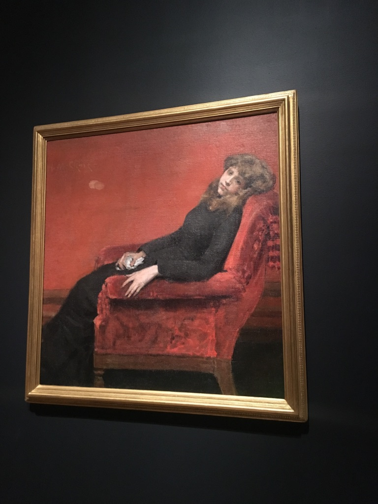 (The Young Orphan, 1884)
William Merritt Chase是一个生前非常著名的画家，在他去世之后被评论为过于传统而被人们所遗忘。展览主要分为几个部分：Studio as Theater, European Education, Modern Conditions, Posing and Composing, Japonisme, Landscape 和 Life in the Studio。从这也可以看出Chase作为一个画家，并不专注于某一种特殊的题材，而是拥有广泛的主题。其中个人最喜欢的有Studio as Theater，Modern Conditions，Posing and Composing，Japonisme和Life in the Studio.
Studio as Theater
Chase在纽约的画室充满了个性。在那里面有着大师的作品，意大利的家具，亚洲的布料，伊斯兰的灯，异域的铜罐，日本的阳伞等等等等，他的画室简直就是个百宝箱，有着来自世界各地的吸引着他的物品。这与他早年去欧洲多地学画，旅行是分不开的。画室不仅是工作的地方，也是他灵感的源泉。在这里，他画下了人们来参观时的情景，细心地雕琢着收藏的异域挂毯（Studio Interior, 1882）；他画下了他未来的妻子从门边探出头，问他能不能进来(May I Come In?, about 1883)；画下了他妻子坐在他的一幅画前转过头看他的景象（An Artist’s Wife, 1892, 她在欣赏的画也在此次展览里哦）；画下了刚刚在看画儿的女儿转过头来和他说话的情景（Did you Speak to Me?, about 1897）。通过他的笔触和色彩，还有描绘出人物的灵动性，不仅可以看出画家本人的喜好，也可以感受到他日常生活和创作的氛围。
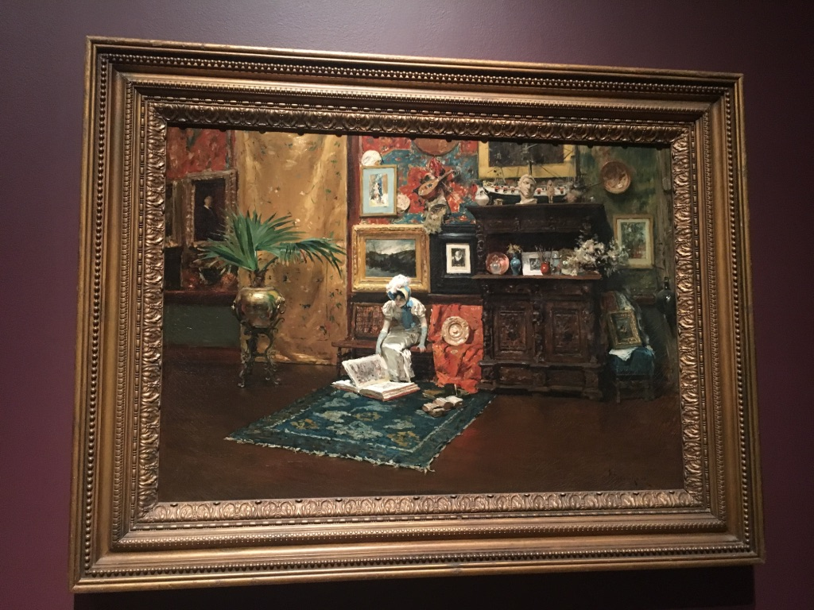 (Studio Interior, 1882)
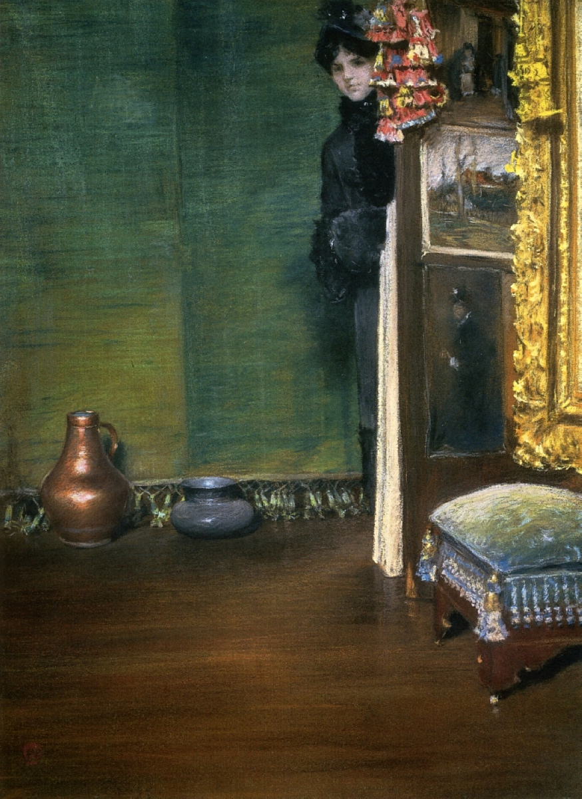 (May I Come In?, about 1883)
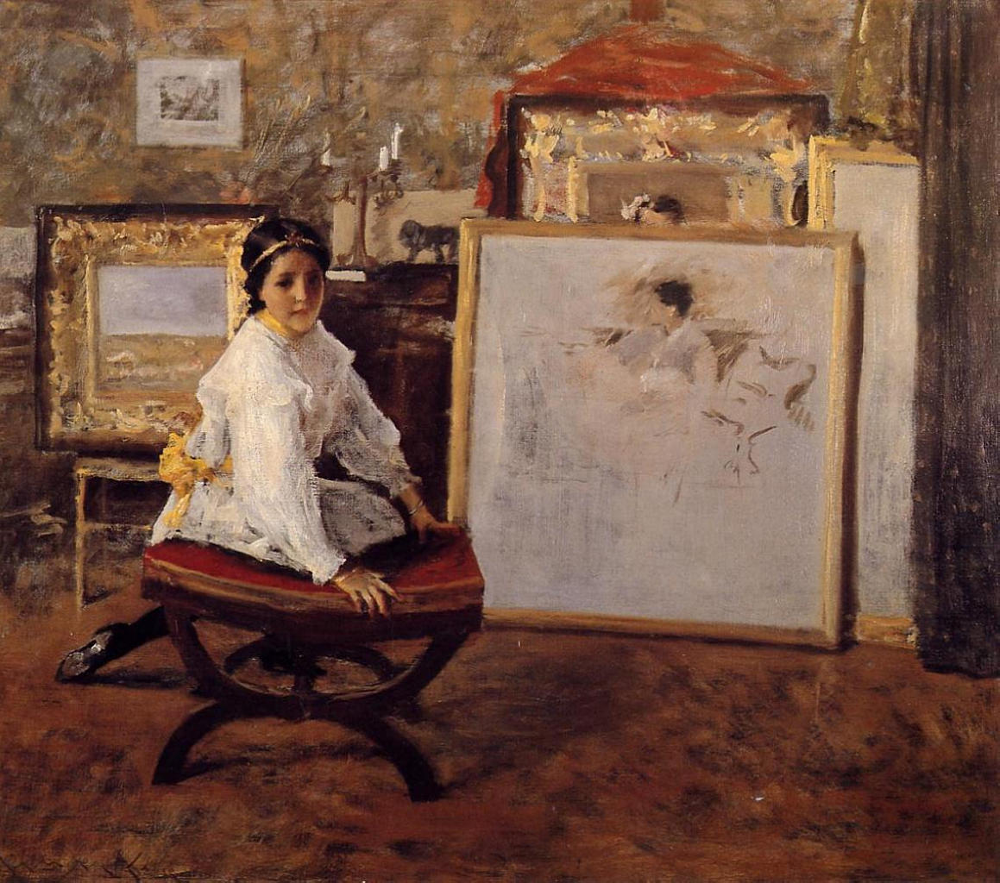 (Did You Speak to Me?, about 1897)
Modern Conditions & Posing and Composing
伴随着南北战争的结束和第二次工业革命的到来，美国经济蓬勃发展，社会向着现代化告诉迈进（这段好像是太正式了一点）。其中最重要的一个特点就是女性解放。女性开始独立思考，开始单独外出，开始参与之前只有男性的各项活动。Modern Conditions主要描绘了社会现代化的一些景象（去外国度假之类）和女性开始广泛出现在公共场合之中；而Posing and Composing主要是Chase为各种各样的现代女性做的肖像画。个人最喜欢的是下面的两幅。
A City Park (about 1897)描绘的是在布鲁克林的Tompkins公园里，人们（主要是女性和孩子）在公园里享受着悠闲的时光，一位衣着时尚的女性独自坐在公园的长椅上，好像在好奇的看着画家，却又有点警惕。画家没有离她很近，仿佛害怕惊扰了她，脸部细节也不是特别清晰。整个画面给人感觉十分的祥和，也充满了现代生活的感觉。
第二幅是为她的学生Dora Wheeler作的画像。Chase虽然当时非常有名，但是光靠画画还是无法养活他的一大家子，所以他还教了非常多的学生，而且以女性为主。Dora Wheeler就是其中一名学生，当时她正想在艺术这个当时几乎全是男性的领域创出一片天地。Chase选择了在Wheeler自己的画室为她画画像，背景是Wheeler自己非常喜欢的异域风情的挂毯，Wheeler穿着鲜艳的蓝色衣服，在黄色的背景下尤其显眼。她一只手托腮，一只手随意的搭在椅子的扶手上，颇像当时画报里时髦的女性的姿势。最引人注目的还是她的眼神，她好像在思考，眼神中有一种坚毅，一分自信还有一分从容。
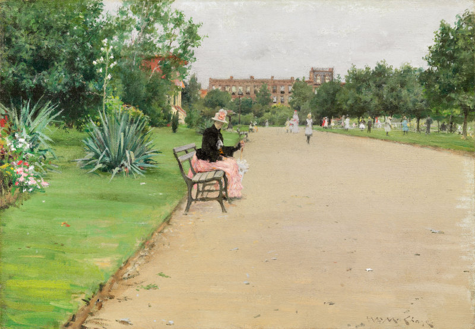 (A City Park, about 1897)
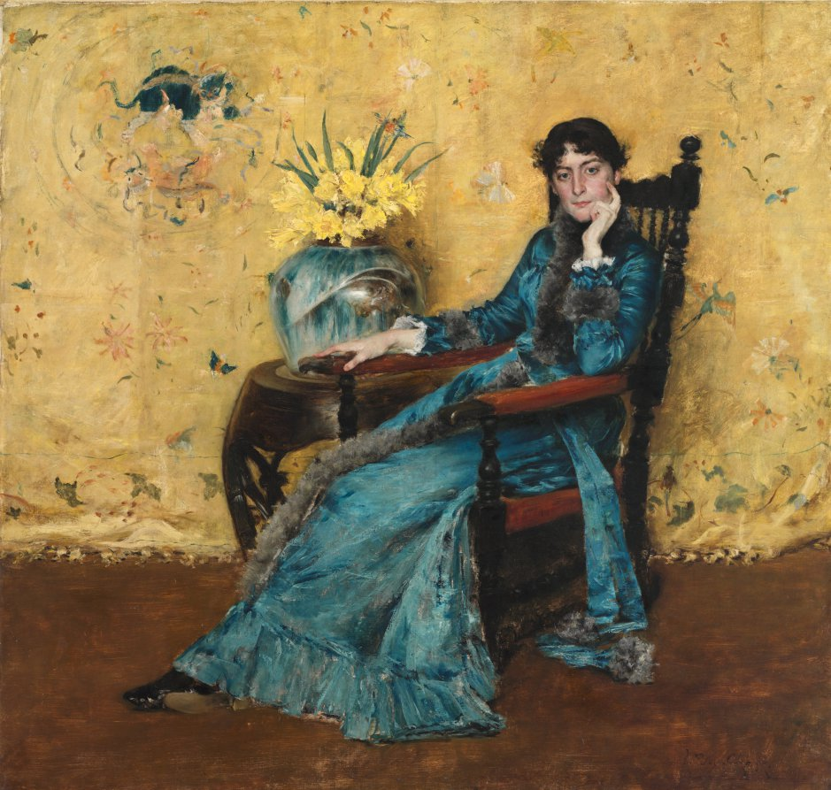 (Dora Wheeler, 1882-83)
Japanisme
说起Japanisme，最先想起来的可能是莫奈为他妻子画的一张肖像(Camille in Japanese costume, 1876)，画中他的妻子身穿红色的日本和服，拿着日本扇子摆出了一个优雅的造型。由于日本明治维新，西方世界迅速的接触到了日本的各种文化并萌发了很大的兴趣。一时间西方艺术界十分流行日本和服，日本图案的阳伞，扇子，日本的绘画，还有日式的公园。Chase当时在欧洲就接触到了日本相关的艺术，并创作了许多这样的作品。Chase对日本文化十分喜爱，还为自己其中一个女儿起了一个日本名字Koto，与他的一位日本学生同名。他为他女儿Cosy(注意不是Koto)画了一幅穿着和服，剪着日本小孩发型的画儿，虽然起名My Baby，还是有评论一位这是一位日本孩子的肖像。Chase不仅特地让自己的模特穿上日本和服，在日式布景下为他们画画，而且还将日本元素渗透到了他的生活里。在他的一副描绘他的家人在海边度假的绘画中，我们可以看到日本元素的遮阳伞。 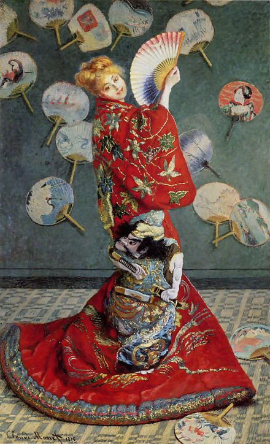 (Camille in Japanese costume, Claude Monet, 1876)
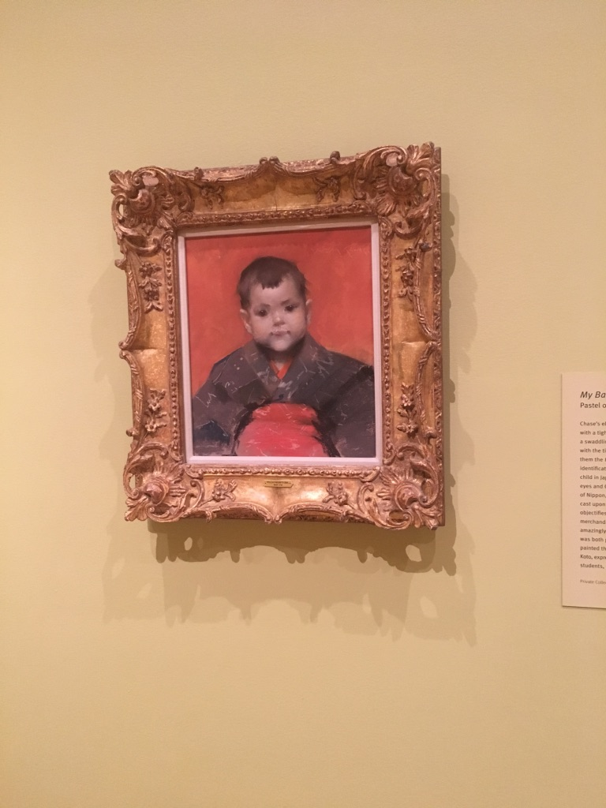 (My Baby Cosy, 1888)
值得一提的是，MFA有非常多的Japanisme的作品。除了莫奈妻子的肖像以外，去年MFA还举办了猴年特展和19世纪初伦敦和东京城市面貌对比展。猴年特展中大部分是日本的西游记绘本，还有熟悉的猴子捞月和日本著名的Three Wise Monkeys。19世纪初日本和英国城市面貌对比展主要展出19世纪初期日本的浮世绘和英国城市风貌的素描图，通过对比可以看出两个社会的不同。
Life in the Studio
有人曾在Harper’s Magazine中这样评论Chase，work is recreation and [his] recreation is work。Chase有非常大的一部分作品是描绘他的个人生活。Chase大约是把绘画作为了一种记录自己生活的方式，就像我们现在喜欢拍照片一样。其中个人最喜欢的一幅是Mrs. Chase and Child (I’m Going to See Grandma)。画中描绘了Chase的妻子Alice和自己的小女儿准备出门拜访自己祖母的场景。小女儿穿着可爱的粉白色外套，她的妈妈细心地为她整理衣服，前景中有一只非常可爱的小山羊玩具，画的右下角还有一个躺着的日本娃娃。和煦的阳光透过窗户搭载墙上和舒适的沙发靠垫上，表现出Chase一家的生活还是十分优渥的。这些描绘自己生活场景的画都有一种灵动感，看着这些画仿佛都可以想象出画家一家的日常生活场景。
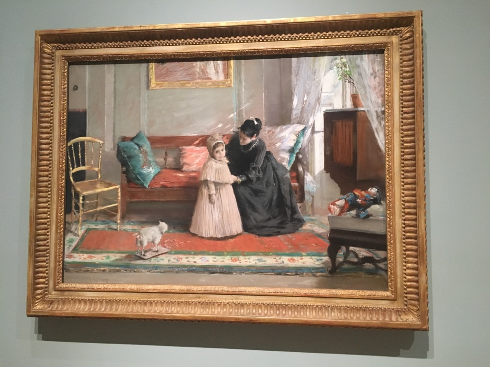 Mrs. Chase and Child (I’m Going to See Grandma), 1889
Others
“我爱画死鱼”
除了上述介绍的一些，Chase还有非常多的市场上的死鱼等海产品，与他的大多数作品仿佛完全不属于同一个世界，也许是受这些鱼的质感的吸引吧。
 (Still Life with Fish, 1908)
(Still Life with Fish, 1908)
”我桃李遍天下“
前文提到了Chase通过当老师的方式贴补家用，他的学生有一些成为了美国现代艺术中的重要人物。奇特的是，他的学生几乎都没有沿袭他的印象派风格，而是发展出了自己的个人风格。大约这是与Chase本人对艺术开放的态度分不开的。MFA配套此次Chase的展览，还在整个博物馆中贴了非常多的Student of Chase的小标签。在MFA的另一个特展Making Modern中，有三位Chase的学生，分别是Edward Hopper，Charles Sheeler和Georgia O’Keeffe。下面也附上他们三位的作品
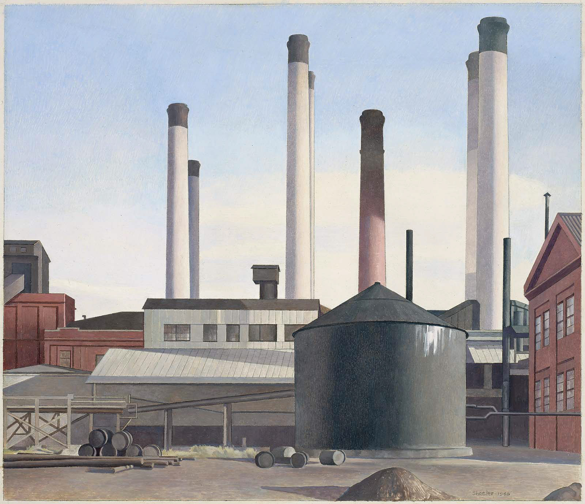 (Fugue, Charles Sheeler, 1940)
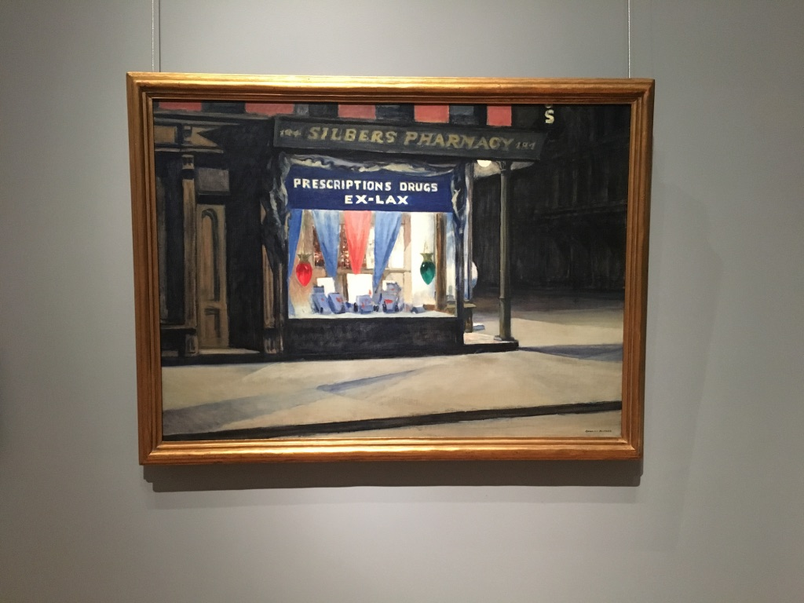 (Drug Store, Edward Hopper, 1927)
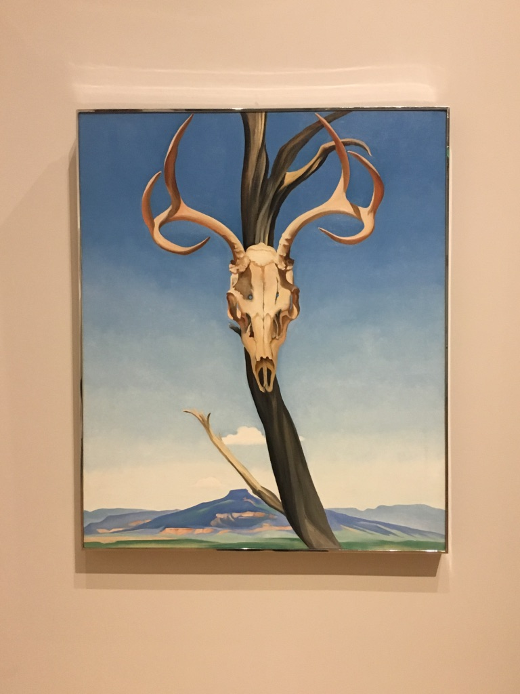 (Deer’s Skull with Pedernal, Georgia O’Keeffe, 1936)
总结
按照此次特展Curator, Erica E. Hirshler的说法，此次展览给了人们一个再发现Chase的机会。时至今日，他已经没有与他同时代的Jhon Singer Sargent等画家有名，但是通过这些绘画，我们可以感觉到他是一个非常积极，有趣，充满活力的画家，也得以通过他的作品一探19世纪初美国人民和美国社会的氛围。
 （此次特展出版物封面）
（此次特展出版物封面）
最后附上MFA对此次特展的介绍，尤其推荐其中的视频
William Merritt Chase | Museum of Fine Arts, Boston 就是这个： 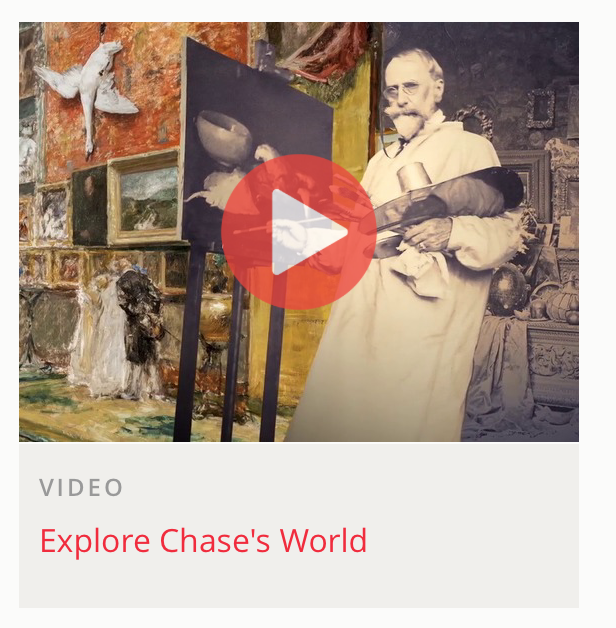